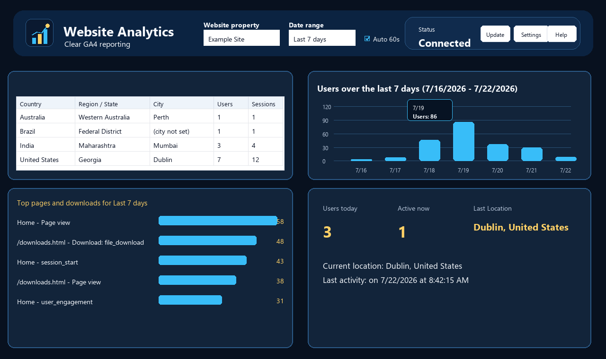

Website and Date Filters

- Website property controls which GA4 property is queried.
- Date range controls standard reports, charts, and summary cards.
- All websites combines enabled properties.
- Realtime values come from GA4 realtime endpoints and may not exactly match standard reports at the same instant.